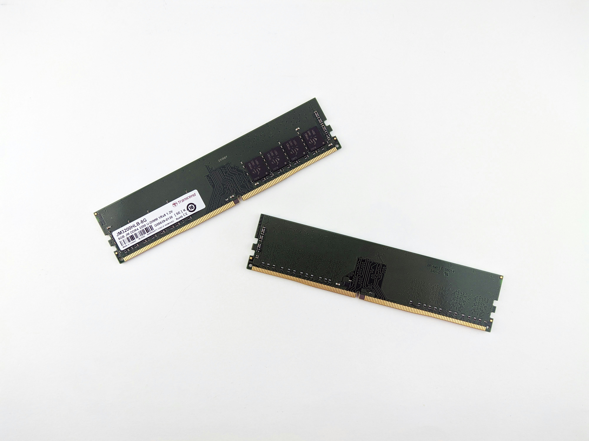
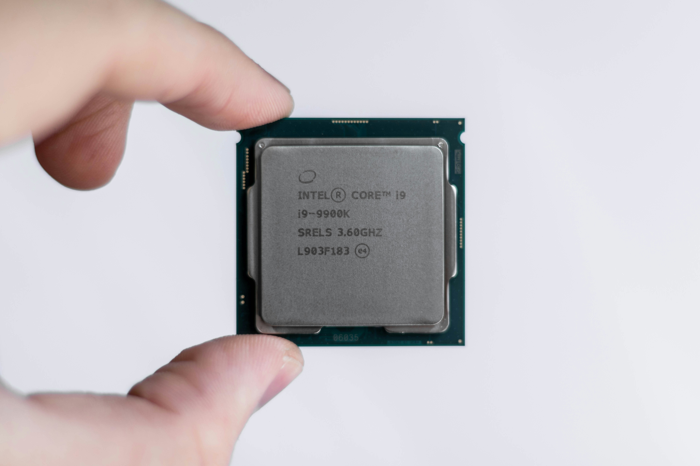
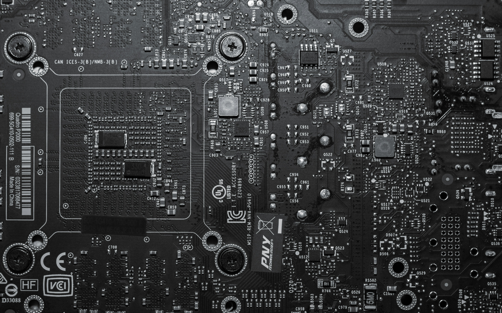
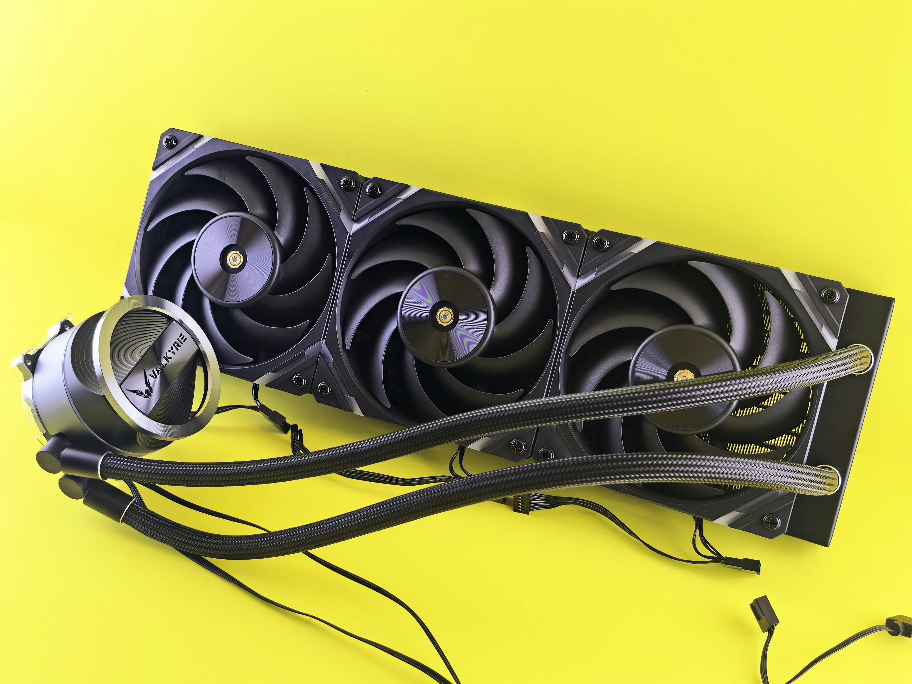
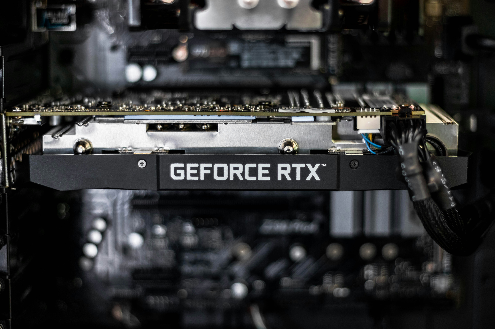
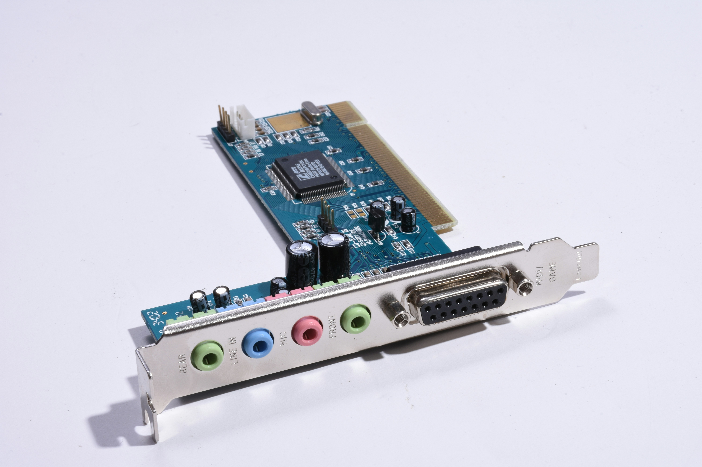
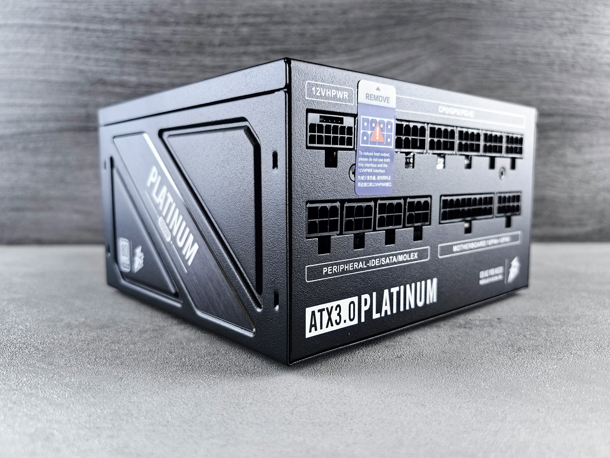

[What is computer hardware?]
Computer hardware refers to the physical, tangible components of a computer system, the parts you can actually see and touch, as opposed to software which is the non-physical instructions or programs that tell the hardware what to do. For a full computer setup, it would consist of input and output devices. Input devices are a type of hardware component that allows users to enter data and instructions into a computer. For example, the act of me (author) typing this sentence uses a keyboard, which is an input device. Moving on, output devices are a type of hardware componnet that conveys information to one or more people. A simple example would be you, looking at this particular sentence of a paragraph right now through a display device, which is an output device.
[Types of internal hardware]
- RAM (Random Access Memory)
- CPU (Central Processing Unit)
- Motherboard
- Cooling system
- GPU (Graphics Card)
- Adapter Cards
- Power Supply

What is RAM?
RAM, also known as Random Access Memory, is a volatile memory that stores instructions waiting to be executed by the processor, data needed by those instructions, and the results of processing the data. Volatile memory means it is temporary, meaning that items stored in RAM will be deleted after the systems unit powers off.
The amount of RAM, usually measured in GB(gigabytes), that is needed depends on the programs and instructions. A computer with 16GB of RAM can typically run more programs simultaneously, or handle larger, more demanding software, compared to a computer with only 8GB. Of course, this hypothesis assumes the same CPU is used for both computers, which will be covered after this.

What is a CPU?
A CPU, also known as Central Processing Unit, is a chip that interprets and carries out the basic instructions that operate a computer. A processor executes instructions through a repeating four-step process called a machine cycle. Modern processors also use pipelining, which improves overall processing speed and efficiency. All CPUs contain a control unit and an arithmetic logic unit, otherwise known as CU and ALU respectively.
The control unit (CU) is the component of the processor that directs and coordinates most of the operations in the computer. The arithmetic logic unit (ALU) performs arithmetic, comparison, and other operations

What is a motherboard?
The motherboard is the main circuit board of the system unit. It acts as a "connector" between computer components/hardware for them to work together in order for a computer to function.
The motherboard also holds the ROM (Read-Only Memory) chip, which stores the essential startup instructions needed to boot the computer. Unlike RAM, which is volatile and clears when the power is off, ROM retains its data permanently.

What is a computer cooling system?
A cooling system prevents the processor and other components from overheating. Heat is generated from the CPU, which needs to be released, thus the invention of a computer cooling system. Most computers use heat sinks, a metal component (often paired with a fan) that absorbs and disperses heat away from the CPU. Figure 4. shows another form of computer cooling system known as a computer liquid cooling system, which uses liquid to carry heat to the fans to be released to the surroundings.

What is a GPU?
GPU, also known as Graphics Processing unit, or commonly known as Graphics card, is a type of adapter card(which will be covered), it renders visual output, which is everything displayed on the monitor display. Most computers, especially portable ones, will mostly only come packaged with integrated graphics built into the CPU, which is sufficient for basic tasks like web browsing, etc.
The graphics card shown above is a GeForce RTX graphics card, which is one of the dedicated graphics cards out there, made by NVIDIA, which is one of the leading global manufacturers of graphics cards, alongside their competitors such as AMD.

What is an adapter card?
An adapter card is a type of hardware that enhances functions of a component of the system unit and/or provides connections to peripherals. For example, a USD adapter card can provide extra USB ports on a system unit, allowing you to connect more devices to the computer at a time.
The motherboard contains expansion slots, which is a socket that can hold an adapter card. The number of expansion slots varies depending on the motherboard, but most systems include enough slots to accommodate common adapter cards such as a graphics card and sound card.

What is a power supply?
A power supply, formally known as Power Supply Unit, converts electricity from a wall outlet from alternating current into direct current, and also into specific voltages needed to safely power all the hardware components in the system unit. Every component draws varying amount of power, so the power supply is responsible for distributing the correct amount of power to each component.
Note: Input and output devices that will be featured and elaborated, will only consists of devices of GENERAL individual use case only. This means an output device like data projector will not be covered in this website because it's use case involves more than one person, as well as devices for the physically disabled will also not be covered here.
[Types of input devices]
- Keyboard
- Mouse & Other Pointing Devices
- Microphone
- Webcam
[Types of output devices]
- Display Devices
- Printers
- Earbuds, Headphones, and Speakers
Advantages and Limitations/Challenges of using Computer Hardware
| Advantages | Category | Limitations/Challenges |
|---|---|---|
| Faster processing and smoother multitasking with the right specs | Performance | Requires regular upgrades to keep up with newer software demands |
| Wide range of options to fit different budgets | Cost | High-end components (GPUs, large RAM) can be expensive |
| Customizable and upgradable — swap parts as needs grow | Upgradability | Compatibility issues — not every component fits every motherboard/socket |
| Works consistently without depending on internet access | Reliability | Physical wear over time — fans, drives, and other moving parts degrade |
| Enables specialized, high-performance work (rendering, servers) | Maintenance | Requires upkeep — cooling, dust, power consumption, eventual e-waste |
Workplace Applications
Hardware is chosen with matching specifications to the actual workload of each role. A department that mainly works with spreadsheets and documents doesn't need the same setup as one producing video content or managing servers. The table below shows how hardware recommendations can differ across departments within the same organisation, based on their specific day-to-day tasks.
| Department | Recommended Specifications | Explanation |
|---|---|---|
| Sales, Marketing and Finance | Intel Core i5, 16GB RAM, 512GB SSD, integrated graphics | Mainly used for spreadsheets, CRM systems, content platforms, and web applications, they don't require dedicated graphics. |
| Creative / Design | Intel Core i7, 64GB RAM, 1TB SSD, dedicated GPU, sound card | Image and video editing require significant graphics processing and large storage for large media files. |
| IT | Intel Core i5, 32GB RAM, 512GB SSD, integrated graphics | Managing servers and systems require extra RAM for multitasking, but doesn't require a dedicated graphics card since the work isn't visual. |